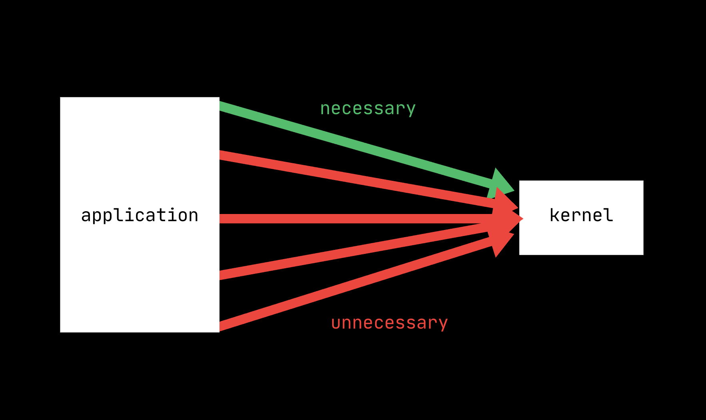

Post-exploitation, from a defensive perspective, involves limiting attackers' access to program resources. The threat model assumes that a program is exploitable, but that the attacker's post-exploitation strategy requires additional resources within the program. Systematically restricting those resources is the goal of sandboxing.
For example, in a Java program, removing unnecessary classes and functions reduces the number of functions in an attacker's toolbox. The same applies for libraries: removing unused functionality from a program's dependencies reduces the risk that, post-exploitation, that functionality could be used for lateral movement or privilege escalation.
Removing unused code helps, but an attacker who controls the process can still ask the kernel for anything the program is allowed to do.
Enter the Kernel
The kernel is the gatekeeper for fundamental hardware functionality. Userspace applications don't touch silicon directly. When a program wants to create a network socket, open a file, or spawn a process, they have to ask the kernel. This occurs via a system call (syscall).
Depending on the instruction set architecture and OS, systems can have hundreds of syscalls, but most programs use only a few. A text editor has no business making network connections, and if it's trying to use that kernel functionality, the program has likely been exploited, and the system call should be denied.

seccomp-bpf, a name stemming from "secure computing" and "Berkeley Packet Filtering," is the Linux tool used to create an allowlist of usable syscalls while denylisting everything else. Applying it is simple, but determining which system calls to allow is the real challenge.
Chestnut (paper, repo), a tool developed by Canella et al., statically analyzes the source code and the program binary to generate a list of system calls, and uses dynamic profiling to refine the list.
It works pretty well. According to the paper, "Chestnut on average blocks 302 syscalls (86.5%) via the compiler and 288 (82.5%) using the binary analysis on a set of 18 applications." Blocking 82.5% of syscalls on average is massive for reducing the potential of misuse.
The Catch
Flat system call restriction misses a great deal of context. Actions that are necessary can still be used maliciously. For example, if your program needs to call the read syscall to read /home/user/data.txt, it can also read /etc/passwd.
Questions like "what are we reading?" and "what arguments are we executing this system call on?" are ignored when generating lists and restricting their functionality using seccomp-bpf.
Follow Threads
The Chestnut paper discusses related work and potential ideas to build upon Chestnut, including adding arguments to seccomp-bpf, coverage-guided fuzzing, or adding an authentication step to each system call.
There is a whole family of projects pursuing kernel sandboxing, including Sandlock, Confine, Sysfilter, Speaker, Timeloops, Podman, Sysdig, Decap, Sysverify, and µPolicyCraft. Each is pursuing the problem from a different angle.
The problem space is moving from "which syscalls should we allow" to "under which conditions should these syscalls be allowed," and that's a much harder question to answer.